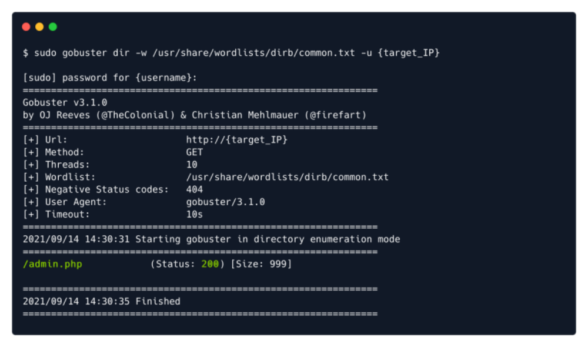

gobuster
apt install gobuster
or
go install github.com/OJ/gobuster/v3@latest
or
sudo git clone
https://github.com/OJ/gobuster.gitcd gobuster
go get && go build
go install
Usage:
dir : specify we are using the directory busting mode of the tool
-w : specify a wordlist, a collection of common directory names that are typically used for sites
-u : specify the target's IP address
General Wordlist Locations:
/usr/share/wordlists/dirb/common.txt
/usr/share/wordlists/dirbuster/......
If SecLists is installed (
https://github.com/CybeXRay/SecLists)
/usr/share/seclists/Discovery/Web-Content/directory-list-2.3-small.txt
gobuster dir -u {Target_URL} -w {Path to Wordlist} [-x {File types, eg php,html} OPTIONAL]
Note: The -x Option is only used to find specific type of files.

One Example with -x
Note: Similar Application in HTB Academy course --→
Ffuf